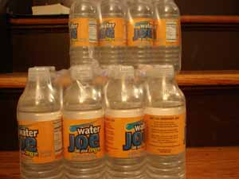

Mom gets a delivery from UPS

The UPS truck pulled up to my house today and delivered a heavy box addressed to me. I couldn’t imagine what was inside, although Leland had alerted me to expect a delivery. Upon opening it, I found a whole case of Water Joe , the caffeinated water I used to buy years ago when it was available here in Pennsylvania. Isn’t Leland thoughtful?! What a great time for a pick-me-up, when I am starting to lose it in a big way over the kitchen remodeling.
Comments
Leland is a sweetie! I expect you’ll be recyling all those water bottles! I really have been taking note of all the squashed water bottles all over the place that people do not bother to recycle or even find a waste bin to put them in! Maddening!
Yes, Leland is a very thoughtful son!
I’ve never seen Water Joe for sale, and in fact, had never heard of it until I read about it here. Sounds like handy stuff.
I plan to recycle them although my normally pretty good recycling routine has suffered a bit since the kitchen remodeling started. I hate to think what bad habits I might pick up before this whole thing is over…
Add a comment